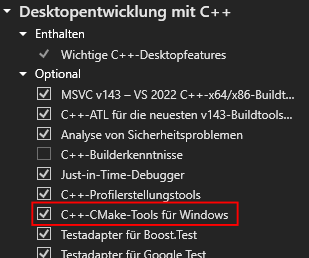

Building the Project
Requirements
To use this project CMake is required.
You can check if CMake is installed by running
cmake --version
Note
CMake can be downloaded or installed OS specific through other methods
- Windows
There are several ways to install
CMakeon Windows.- Using Windows Package Manager
CMakecan be installed using the following commandwinget install kitware.cmake
- Using Chocolatey
CMakecan be installed using the following commandchoco install cmake
- Using Visual Studio
-

Therefore you need to download Visual Studio. The Community Edition is free.
Starting the Visual Studio Installer
Select
Desktop development with C++and make sure thatC++-CMake-Tools für Windowsis checked on the right side of the installer.Press Install
- Linux
A simple way is using
apt-getby running the commandsudo apt-get install cmake
- MacOS
A simple way is using
brewby running the commandbrew install cmake
{kind=link}
As the project also uses netCDF, this must also be installed on the PC.
You can check if netCDF is installed by running
nc-config --version
Note
netCDF can be installed OS specific
Windows
Download and install the netCDF-C library and utilities
Install as usual and make sure to
add netCDFto the systemPATHfor all users
Linux and MAC
The easiest way to install netCDF is via Homebrew. Run the following command in the terminal:
brew install netcdf
Building
Download the git repository with git
HTTPS
git clone https://github.com/RivinHD/Tsunami-Simulation.git
SSH
git clone git@github.com:RivinHD/Tsunami-Simulation.git
Go into the project folder. Your current path should look like this
../Tsunami-Simulation.Install submodules with git
git submodule init git submodule update
Now create a new folder called
buildwithmkdir buildGo into this directory. Your current path should look like this
../Tsunami-Simulation/build.Now we can start with CMake. Run the following command
cmake .. -DCMAKE_BUILD_TYPE=<Type>
Supported values for
<Type>are Release and Debug. If onlycmake ..is used the Release build is selected.The most desired command might be:
cmake .. -DCMAKE_BUILD_TYPE=Release
Note
With the Option
-Ga Generator can be defined used to create the make files and compile the Code. All available Generators can be found at the bottom of the
cmake --helptext. An Example could look like thiscmake .. -G "MinGW Makefiles"
Important
When using a multi-config Generator, i.e. Ninja Multi-Config, Visual Studio Generators, Xcode,
-DCMAKE_BUILD_TYPE=<Type>is not needed, and the build type is configured on compilation.Therefore, this cmake build command is used:
cmake cmake --build . --config Release --target simulation
Options for
--configare Release and Debug. Options for--targetare simulation, sanitize, test, sanitize_test and test_middle_states.Note
With the Option
-Dtoggle options can be activated supported only by thisCMakeLists.txt. Available options are:Option
Description
DISABLE_IO
Completely disable any file IO i.e. Solutions, Stations and Checkpoints
REPORT
Enables the report out for the used compiler
To activate an option, the following must be written:
cmake .. -D <Option>=ON
For Example:
cmake .. -D DISABLE_IO=ON
Now our make files are being build from the
CMakeLists.txtthat are used to build the project.Now we can build the project. The most desired command might be
cmake --build . --target simulation
Options for
--targetare simulation, sanitize, test, sanitize_test and test_middle_states.Option
Description
simulation
Is the Option to build the project with default flags
sanitize
Same as Option simulation but with sanitizers
test
Builds the unit test executable
sanitize_test
Builds the unit test executable with sanitizer
test_middle_states
Build the test against the middle_states.csv.
Configuration can be edited at the top of the test_middle_states.cpp
Running the Simulation & Tests
The executables have been build in to the ../Tsunami-Simulation/build directory with their corresponding name.
E.g. If test is built than the executable name is test (or test.exe on Windows),
for simulation the executable name would be simulation (or simulation.exe on Windows), etc.
All the executables can be found in ../Tsunami-Simulation/build.
The available executables are simulation, sanitize, test, sanitize_test and test_middle_states.
Note
They are only available when build with their respective --target
E.g. the simulation executable can be run with the following command:
./simulation
Or on Windows with
./simulation.exe
Tip
Running the simulation executable without arguments will give you the help text on how to use it.
Simulation Output
The output of the simulation consists of one netCDF file if nothing else is specified. If you define the output format
as CSV several CSV files named solution_<number>.csv will be created. The files are stored in a separate
solutions/simulation/ folder, which is located in the working directory of the executable.
Extracting bathymetry data for the 1D domain
Download GEBCO_2021 grid.
Reduce grid size with
gmt grdcut -R138/147/35/39 path/to/GEBCO_2021.nc -Gpath/to/GEBCO_2021_cut.ncCreate datapoints with
gmt grdtrack -Gdpath/to/GEBCO_2021_cut.nc -E141.024949/37.316569/146/37.316569+i250e+d -Ar > bathy_profile.outAdd commas to create comma-separated values file with
cat bathy_profile.out | tr -s '[:blank:]' ',' > bathy_profile.csv
The bathy_profile.csv is located in: .../Tsunami-Simulation/resources/bathy_profile.csv.